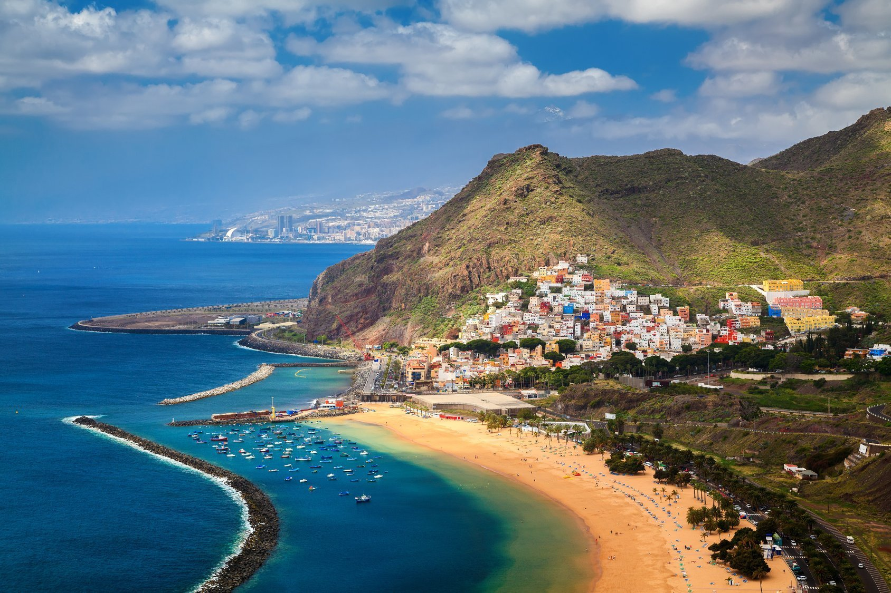
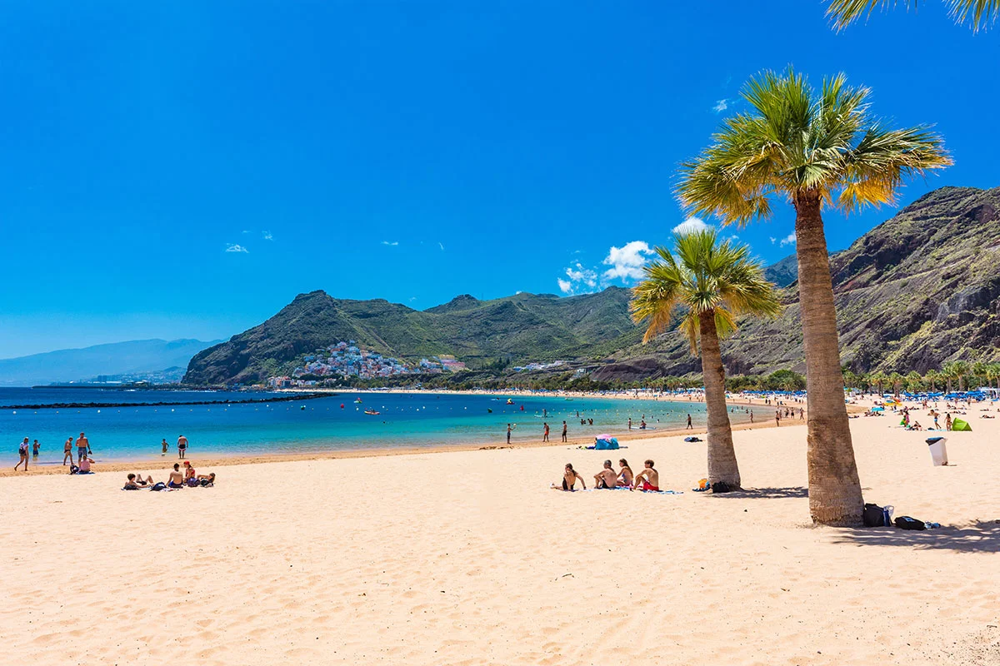
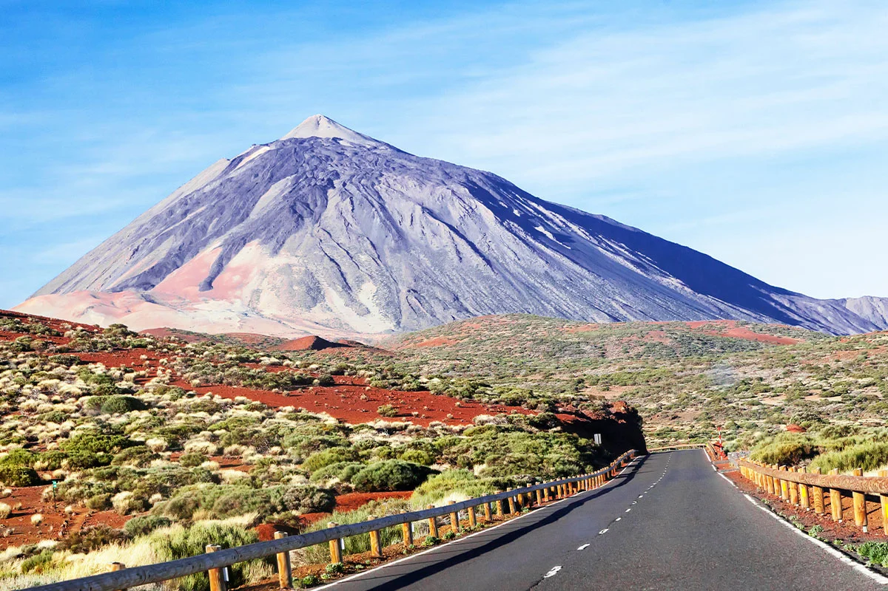
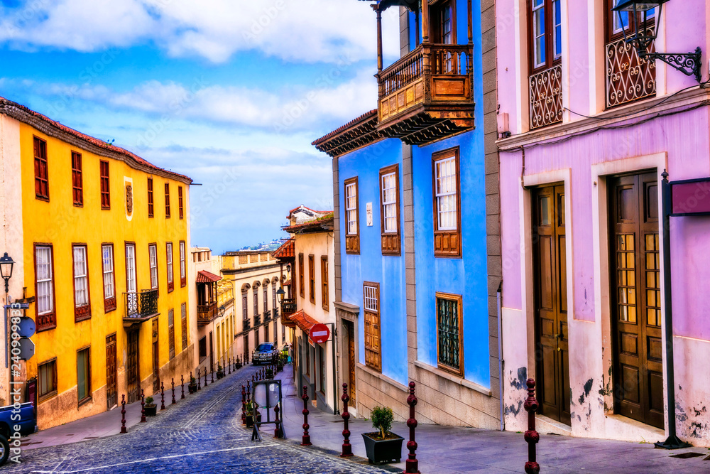
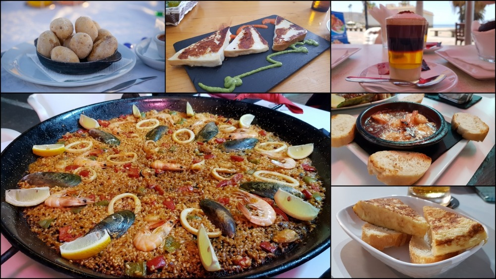

Witamy na Teneryfie
Teneryfa, największa i najbardziej zróżnicowana wyspa archipelagu Wysp Kanaryjskich, to prawdziwy raj dla miłośników słońca, przygód i naturalnego piękna.
Znana jako "Wyspa Wiecznej Wiosny", dzięki łagodnemu klimatowi przez cały rok, przyciąga turystów szukających odpoczynku na złocistych plażach, jak Playa de las Américas czy Playa del Duque, oraz tych, którzy chcą eksplorować jej niezwykłe krajobrazy.
Centralnym punktem wyspy jest majestatyczny wulkan Teide, najwyższy szczyt Hiszpanii (3715 m n.p.m.), otoczony Parkiem Narodowym Teide, wpisanym na listę UNESCO. To idealne miejsce dla miłośników trekkingu i spektakularnych widoków.
Na północy wyspy czeka bujna roślinność, malownicze winnice i urokliwe miasta, takie jak La Orotava czy historyczna La Laguna – również wpisana na listę UNESCO.
Kulinarna strona Teneryfy to kolejny powód, by ją odwiedzić. Wyspa słynie z pysznych dań kuchni kanaryjskiej, takich jak papas arrugadas z mojo, świeże ryby i tropikalne owoce, a także lokalne wina, które zdobywają międzynarodowe uznanie.
Niezależnie od tego, czy szukasz relaksu, aktywnego wypoczynku, czy kontaktu z kulturą i przyrodą, Teneryfa spełni wszystkie Twoje oczekiwania. Zapraszamy na tę niezwykłą wyspę, która łączy w sobie egzotykę, europejską wygodę i niezapomniane wrażenia.